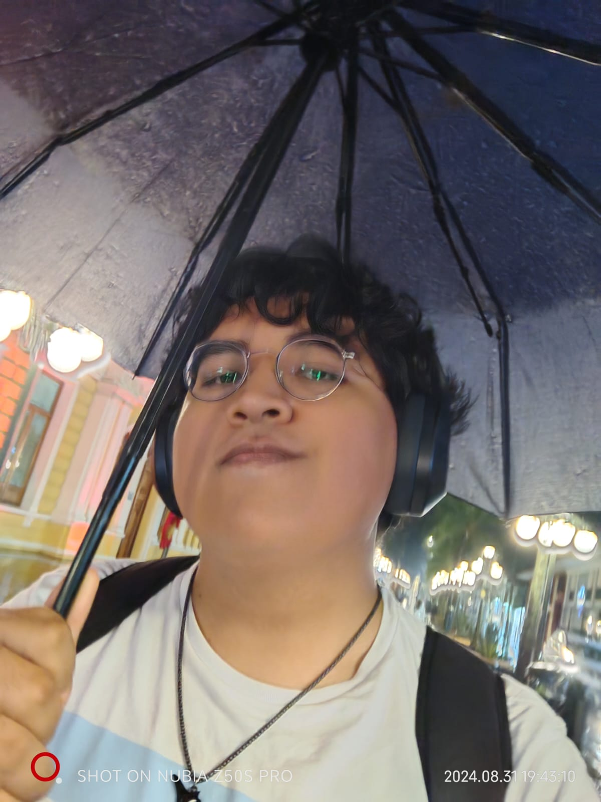

Formacion academica:
"Tengo terminadas la primaria y la secundaria,
no he repetido ningun año hasta ahora, confio en
que saldre de la universidad de la misma manera."
Aspiraciones:
"Me gustaria ser un artista, independientemente
de mi carrera como ingeniero en sistemas, lo que
mas me gusta es el dibujo y el arte, asi que trato
de combinarlo en todo lo que se pueda."
la cancion que me representa:


Volver a Creadores